12.1. ECAT_CiA402
12.1.1. 1. 概述
ECAT_CIA402示例演示使用ESC外设, 基于ETG从站协议栈代码(SSC)实现CANOPEN CiA402协议控制电机的功能。
该例程程序支持对ESC的EEPROM数据进行初始化，能够简化更新ESC的EEPROM的步骤。
如果程序代码中包含由SSC Tool生成的EEPROM数据(eeprom.h), 会检查ESC的EEPROM中存储的数据并根据条件进行更新。
如果EEPROM中的EtherCAT Slave Controller Configuration Area(前8个Word)的数据checksum校验失败，则会使用eeprom.h中的数据初始化EEPROM。
如果EEPROM中的EtherCAT Slave Controller Configuration Area(前8个Word)的数据checksum校验成功，则会进一步校验EEPROM数据中的Product Code和Revision Code。
当Product Code不同或eeprom.h中的Revision Number大于当前已经存储的EEPROM数据的Revision Number时，则会使用eeprom.h中的数据初始化EEPROM。
该方法能够解决初次使用时EEPROM为空情况下checksum校验失败的问题，能够对EEPROM进行初始化。在程序升级阶段，新的程序代码包含的eeprom.h中的Revision Number大于当前已经存储的EEPROM数据的Revision Number时，会使用新程序中的eeprom.h初始化EEPROM，而无需通过主站工具如TwinCAT等去更新EEPROM。
12.1.2. 2. 准备
12.1.3. 3. 工程设置
12.1.3.1. 3.1 使用Flash模拟EEPROM
请参照ECAT_IO的README
注意 : 使用FLASH模拟EEPROM功能时,需要为FLASH_EEPROM内容分配合适的flash空间, 避免与其他的flash内容产生冲突。
12.1.3.2. 3.2 使用虚拟电机
默认使用实际电机进行运动控制，如果需要使用虚拟电机, 在文件`CMakeLists.txt`中, 设置”set(CONFIG_CIA402_USING_ACTUAL_MOTOR 0)”。
12.1.4. 4. 生成从站协议栈代码
由于许可问题, HPM_SDK不提供EtherCAT从站协议栈代码(SSC), 用户须从倍福官网下载SSC Tool并生成从站协议栈代码。
12.1.4.1. 4.1. 下载SSC Tool
请参照ECAT_IO的README
12.1.4.2. 4.2 SSC Tool中导入配置文件
请参考ECAT_IO的README描述, 配置文件路径为: <hpm_sdk>/samples/ethercat/ecat_foe/SSC/Config/HPM_ECAT_CIA402_Config.xml
12.1.4.3. 4.3 SSC Tool生成协议栈代码
创建新工程, 选择指定的配置文件
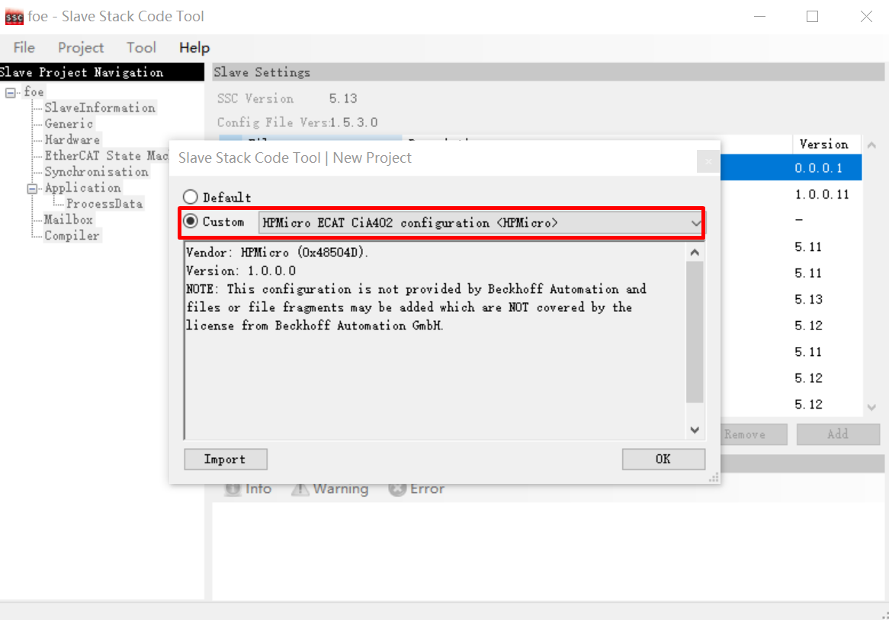
指定输出路径,生成协议栈代码
12.1.4.4. 4.4 SSC协议栈代码修改
通过打patch的方式添加电机控制相关代码到SSC生成的代码。 在SSC目录下的命令行窗口执行：patch -d Src < ssc_cia402.patch
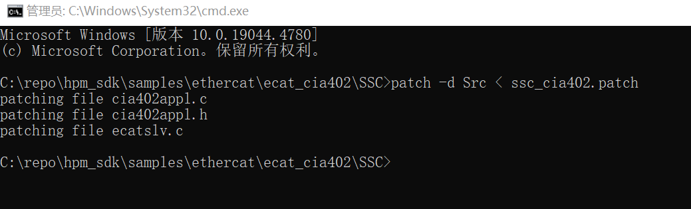注意 ：如果你的电脑上没有安装patch命令，你需要安装2.5.9版或更高版本的GNU patch。如果已安装，请跳过此步骤。从 网站 下载patch命令（当前版本为2.5.9），并将”patch.exe”的安装路径添加到系统环境变量中以便能在命令行窗口中执行patch命令。
12.1.5. 5. TwinCAT工程设置
12.1.5.1. 5.1. 添加ESI文件
请根据实际硬件端口数目修改SSC工具生成的ESI文件中的设备的属性(<Device Physics=”YY”>), 默认生成的属性为”YY”，表示实现了Port0和Port1两个端口。如实际实现了Port0, Port1和Port2三个端口，请手动修改属性为”YYY”。

将ESI文件复制到TwinCAT的安装目录下(如: C:/TwinCAT/3.1/Config/Io/EtherCAT )。
12.1.5.2. 5.2 创建工程
请参照ECAT_IO的README
12.1.5.3. 5.3 软件配置
请参照ECAT_IO的README
12.1.5.4. 5.4 扫描设备
请参照ECAT_IO的README
12.1.5.5. 5.5 更新EEPROM
请参照ECAT_IO的README, 选择正确的ESI文件更新EEPROM内容
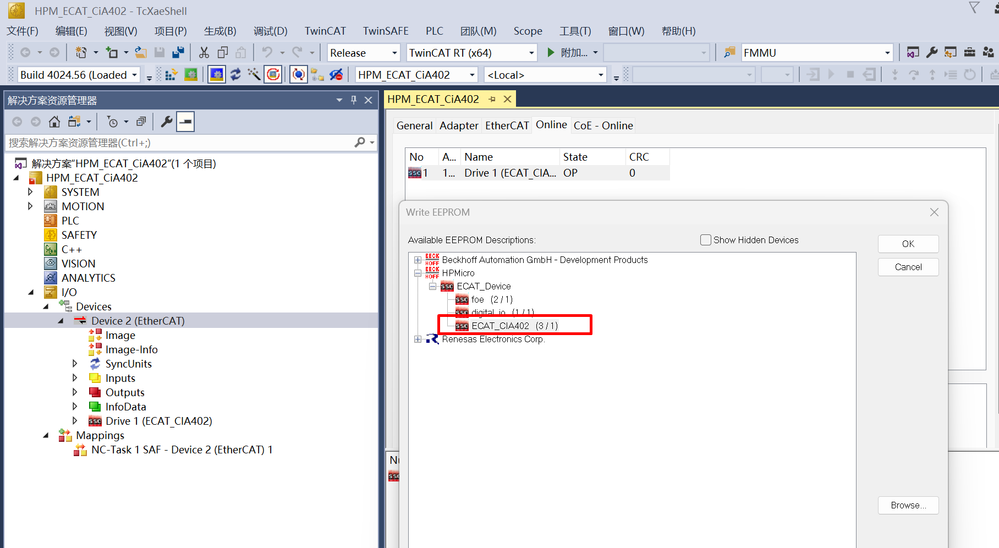
12.1.5.6. 5.6 NC轴控制操作
扫描设备,建立NC轴, 从站默认工作在csv模式：
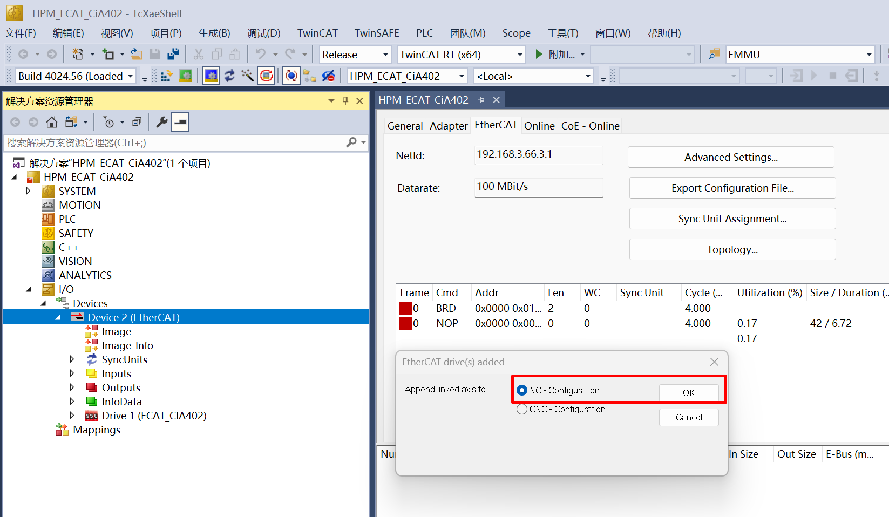 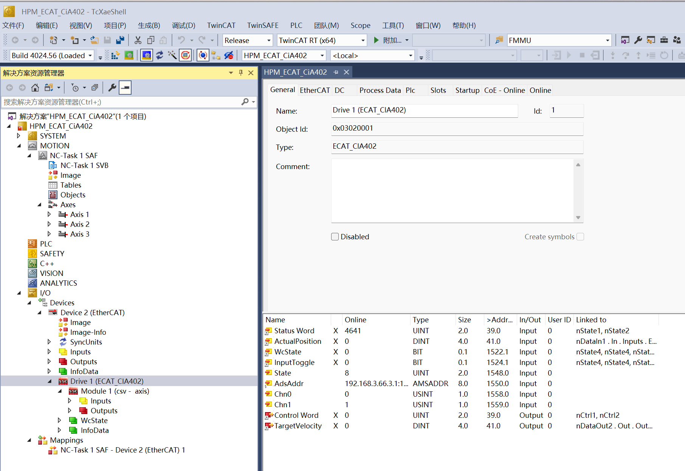检查同步单元设置, DC周期会与NC-Task同步
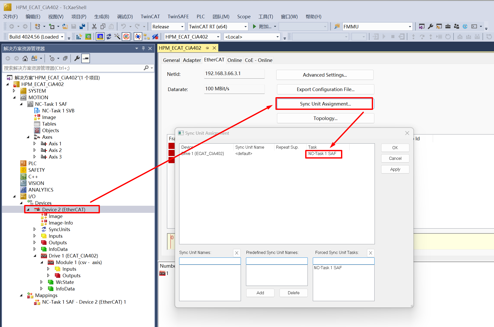检查NC Axis与Device的链接关系
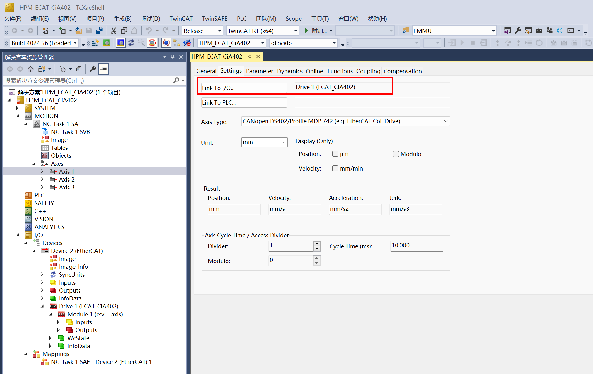检查NC Axis的Enc参数

设置NC Task周期, DC周期应与该值相同。
此处可以设置大一些的周期时间， 避免使用PC做TwinCAT主站时， 由于PC实时性较差造成通信抖动引起”0x1a Synchronnization error”.

设置DC模式
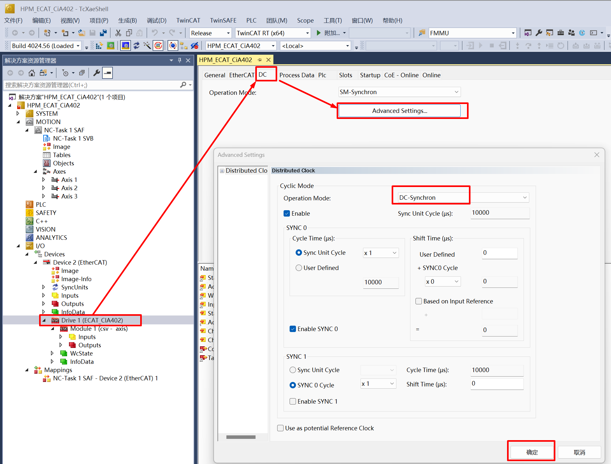
设置NC轴参数, 关闭主站的软件限位设置,避免测试操作中报错。

激活配置,进入运行模式
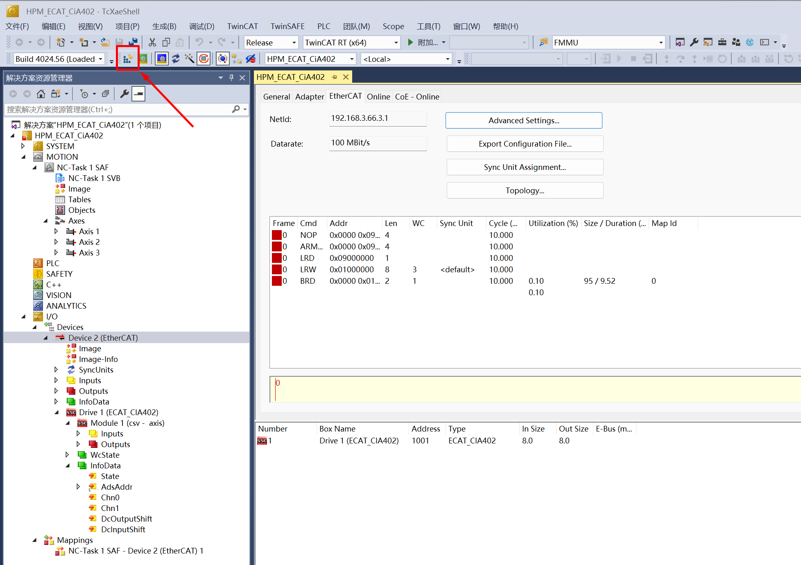NC轴控制页面选项说明

在线控制NC轴运动
在”Enabling”选项中点击”Set->All”,启动控制器

设置目标位置和速度, 注意目标速度值不应超过7mm/s(虚拟电机没有速度限制), 设置后点击”F5”启动

查看目标实际位置和速度


更改NC轴控制模式为csp
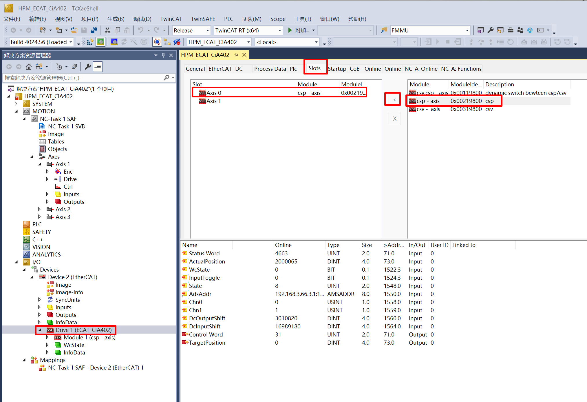
将NC Axis与Device重新链接
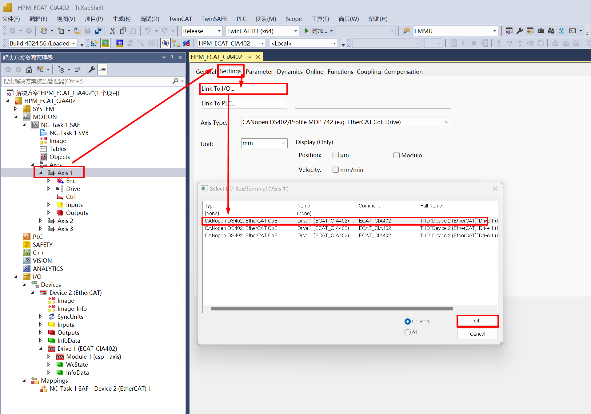
参考步骤8， 重新激活配置
按照上诉步骤使能控制器， 设置新的目标位置和速度, 观察实际位置和速度的变化
参考步骤10.a, 使能控制器
设置新的目标位置和速度，注意目标速度值不应超过7mm/s, 设置后点击”F5”启动
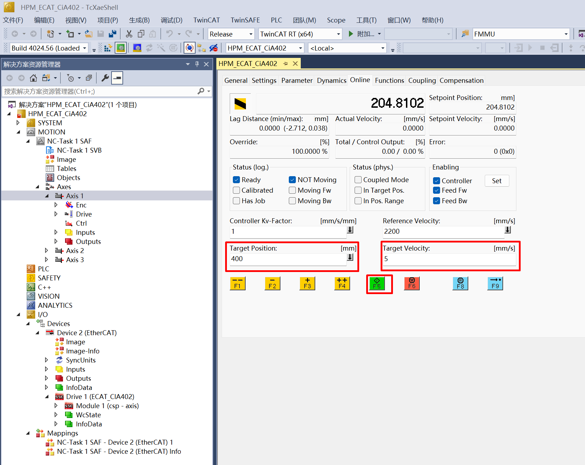
查看目标实际位置和速度
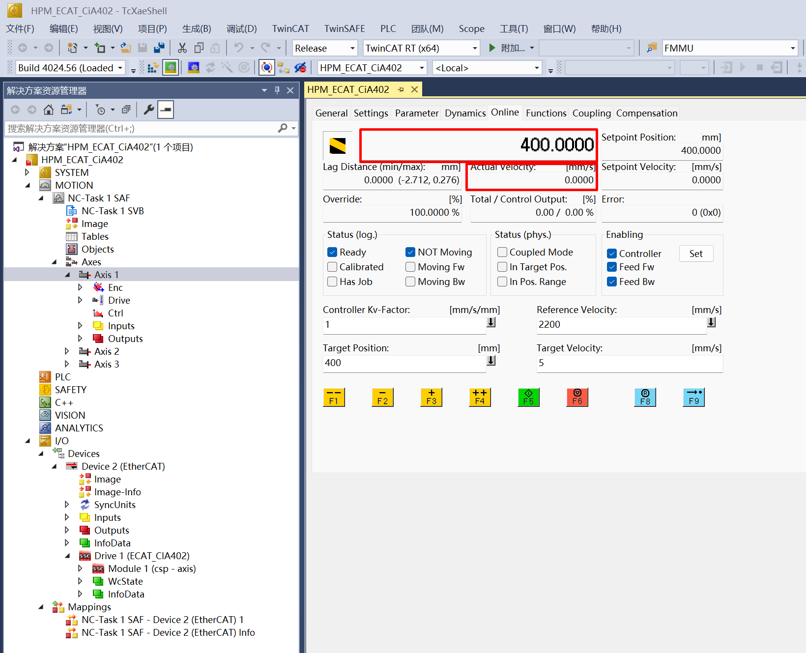
12.1.6. 6. 运行现象
当工程正确运行后, 串口终端会输出如下信息, 通过TwinCAT NC Axis控制页面可以控制电机运动：
当需要初始化EEPROM数据时，log如下：
EtherCAT CiA402 motor sample
Init EEPROM content.
Init EEPROM content successful.
EEPROM loading successful, no checksum error.
当不需初始化EEPROM数据时，log如下：
EtherCAT CiA402 motor sample
No need to init EEPROM content.
EEPROM loading successful, no checksum error.